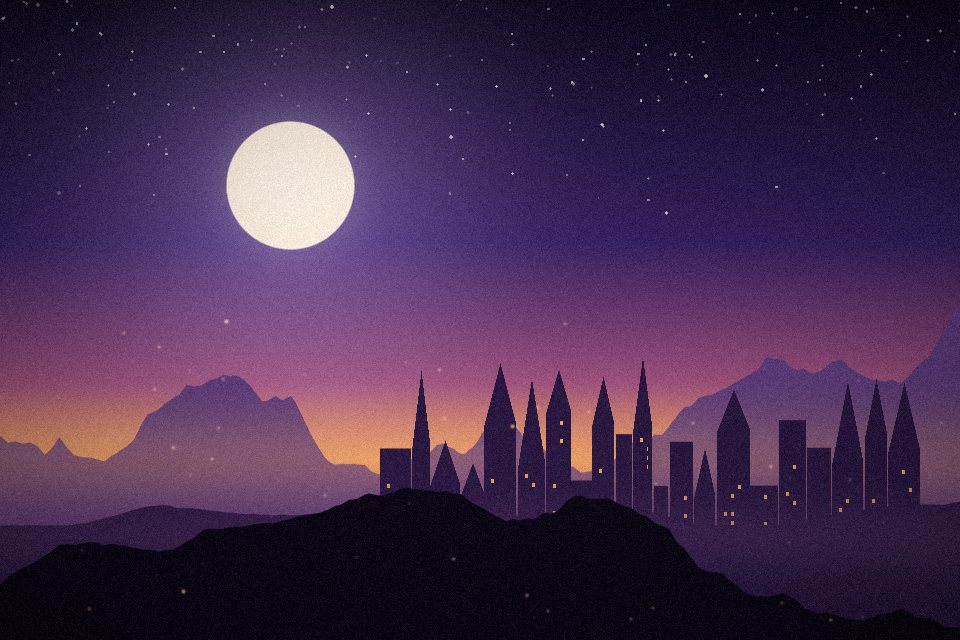
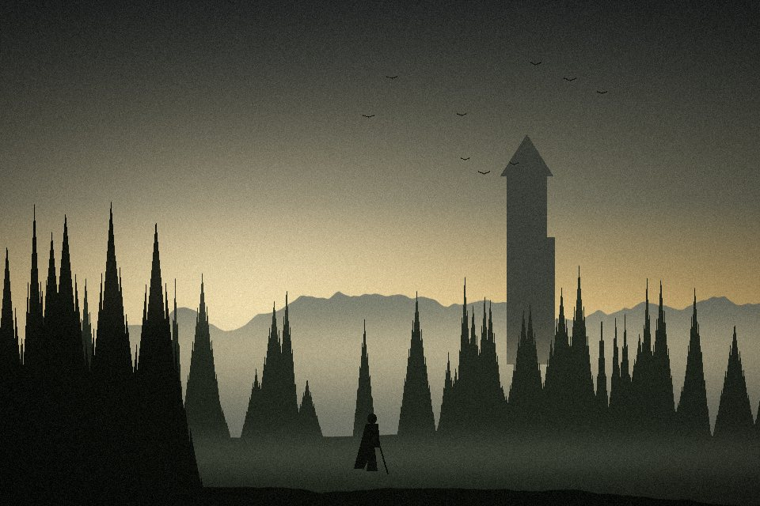
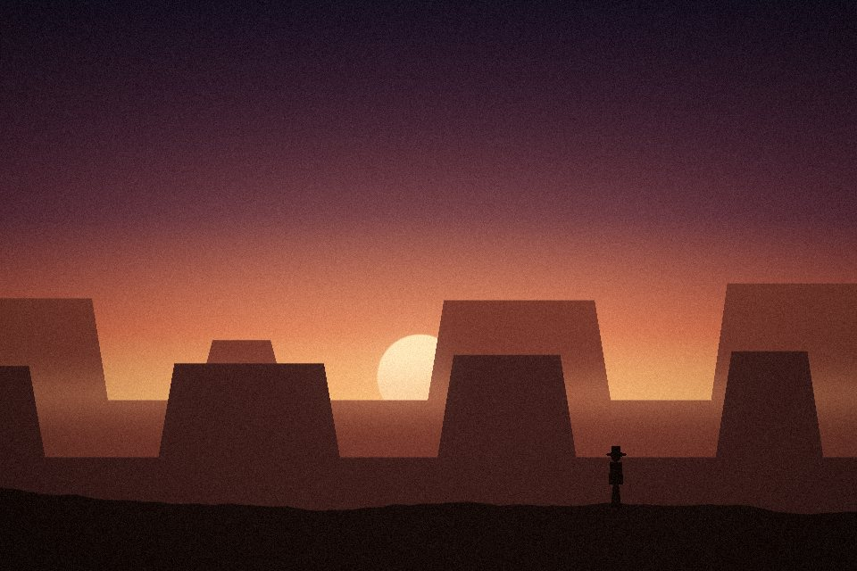
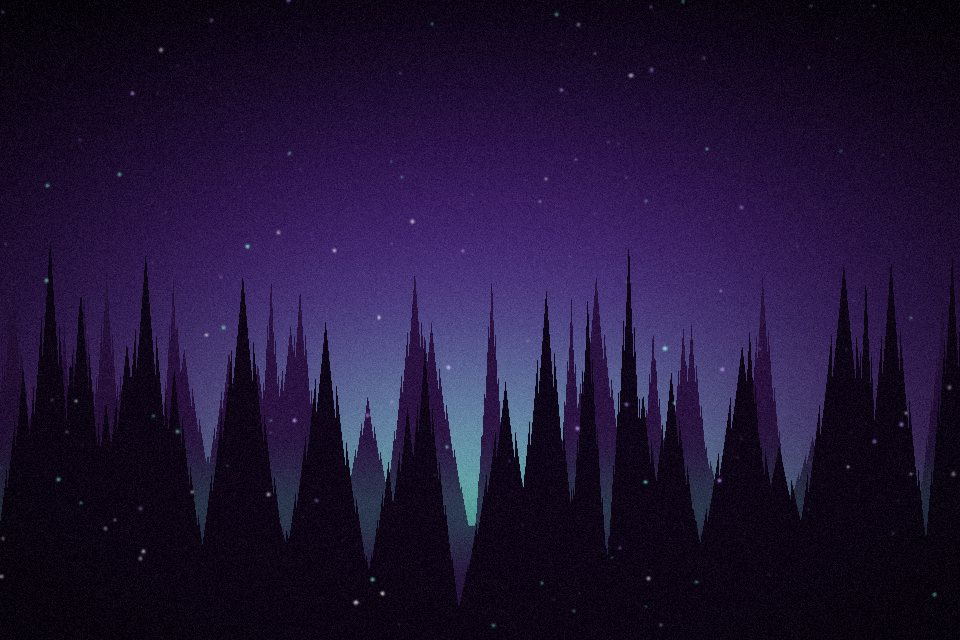
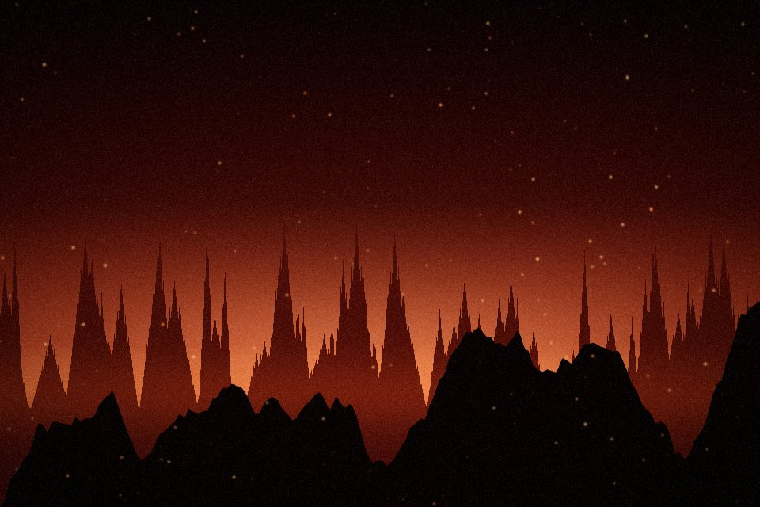
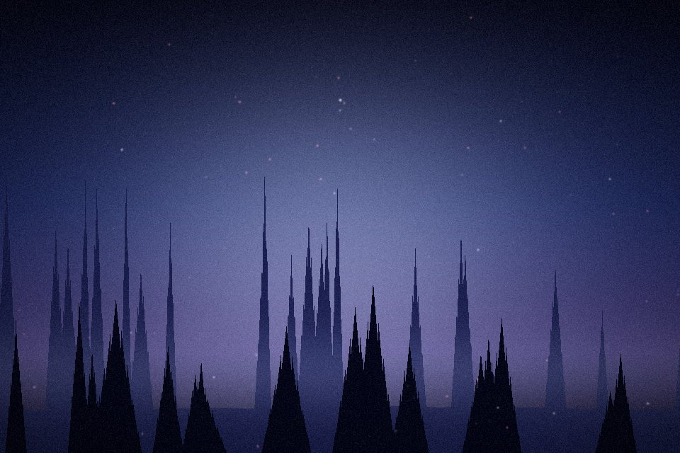
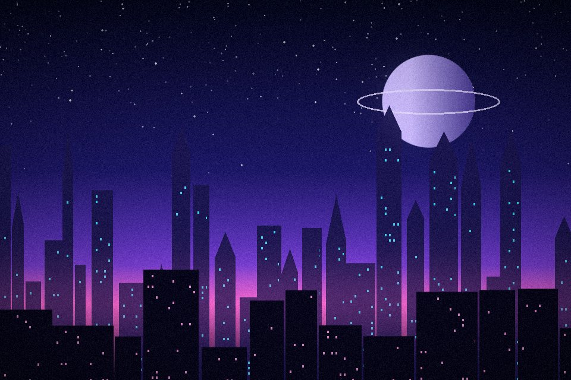

Lv 37
Profili Düzenle
Deniz Arslan
@denizplays
·
S
denizplays
Soulslike bağımlısı, co-op sever. Hafta içi CS2, hafta sonu uzun RPG seansları.
1.284
takipçi
312
takip
48
arkadaş
Şu an oynuyor
Cyberpunk 2077
45 saat oynandı · %64 başarım
38
Tamamlanan
21
İnceleme
1.240
Saat
612
Başarım
Gönderiler
Oyunlar
İncelemeler
Medya
Şu an oynuyor
2
Cyberpunk 2077
45 sa · %64 başarım
Elden Ring Nightreign
12 sa · %18 başarım
Tamamlananlar
Tümü (38)
Elden Ring
134 sa
Baldur's Gate 3
112 sa

The Witcher 3
98 sa

Red Dead Redemption 2
76 sa
İstek Listesi
Tümü (27)

Hades II
₺499
-%30

DOOM: The Dark Ages
₺1.299
-%24

Hollow Knight: Silksong
₺389

Split Fiction
₺1.149
-%21
Favoriler
Elden Ring
5,0
Baldur's Gate 3
5,0
Red Dead Redemption 2
4,5
Hades
5,0
3
3
 Lv 37
Lv 37 Şu an oynuyorLv 37Şu an oynuyor
Şu an oynuyorLv 37Şu an oynuyor